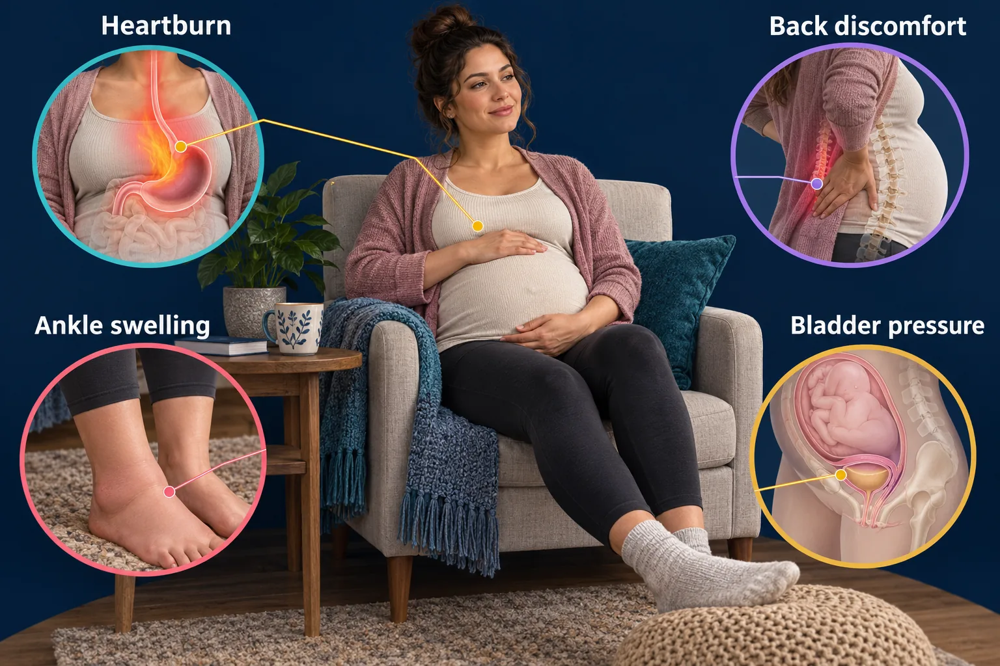

ABSN STUDY HUB · VISUAL STUDY CARD
Discomforts of pregnancy, and the ones that are not

Course labels and notes from the original graphic, arranged into readable sections. The illustration is schematic.
Course overview
- MOST OF IT IS MECHANICAL OR HORMONAL — BUT NOT ALL OF IT
- Swelling of the FACE and HANDS is preeclampsia until proven otherwise. Never a discomfort.
- THE FIX: turn her onto her LEFT side. It lifts the uterus off the vessel. "Left side" is the answer to an enormous number of maternity questions.
🧘 WHAT IT IS, WHY, AND WHAT ACTUALLY HELPS
- Morning sickness
- hCG, first trimester
- dry crackers BEFORE rising · small frequent meals · never an empty stomach
- Heartburn
- relaxed sphincter + pressure
- small meals · stay upright after eating · avoid spicy and fatty
- Constipation
- slowed motility + iron
- fiber, fluids, walking. No stimulant laxatives
- Leg cramps
- circulation and calcium
- DORSIFLEX the foot — do not point the toes
- Backache
- the center of gravity has moved
- pelvic tilt exercises · low heels · side-lying with a pillow between the knees
- Varicosities, piles
- venous pressure
- elevate the legs · do not cross them · side-lying · support hose
- Urinary frequency
- the uterus presses on the bladder
- normal early and late. Burning is NOT — that is a UTI
- Nasal stuffiness
- increased vascularity
- humidifier, saline. Nosebleeds and bleeding gums come from the same thing
🔄 SUPINE HYPOTENSION — ONE FIX
- FLAT ON HER BACK → the uterus squashes the IVC → BP falls
- TURN HER ONTO HER LEFT SIDE → IVC opens → BP recovers
- If she must stay supine: WEDGE UNDER THE RIGHT HIP.
- Right hip up tilts the body LEFT. The wedge never goes under the left hip.
- Drawn out in full in the illustration below this diagram.
⛔ NOT A DISCOMFORT
- × Edema of the FACE and HANDS
- preeclampsia until proven otherwise
- × A headache that will not shift
- with visual changes — the same
- × Burning with urination
- a UTI, and it can start preterm labor
- × Any bleeding, at any stage
- never filed as normal
- × Reduced fetal movement
- counted, and reported the same day